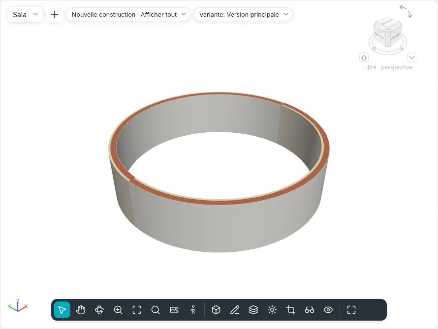

Faux plafonds et colonnes
Les faux plafonds se font dans un plan des faux plafonds, la vue qui regarde vers le haut depuis son plan de coupe. Les colonnes et les poteaux porteurs se placent d'un clic, dans les plans et dans les vues 3D.

Faux plafonds
Modéliser ▸ Construire ▸ Faux plafond fonctionne dans un plan des faux plafonds. Lancé dans une autre vue, Atteindre la vue propose les plans des faux plafonds du projet : l'outil ne change jamais la vue de lui-même.
La carte contextuelle Placer le faux plafond a le groupe Faux plafond :
| Outil | Fonctionnement |
|---|---|
| Faux plafond automatique | Par défaut. Placez le curseur dans une pièce fermée par des murs : la région s'éclaire ; un clic y crée le faux plafond. Son contour suit les faces des murs ; les lignes de séparation de pièce ne délimitent pas un faux plafond |
| Dessiner le faux plafond | Ouvre le mode esquisse (Créer le contour du faux plafond), avec le groupe Dessiner des sols : lignes, rectangles, polygones, arcs vrais, Choisir des murs, Choisir des lignes et Flèche d'inclinaison. Une boucle fermée dans le contour est une ouverture. Terminer le mode d'édition crée le faux plafond |
La barre des options règle le Décalage de hauteur par rapport au niveau du prochain faux plafond (2,60 m dans un projet nouveau) et s'il a la Délimitation de pièce.
Un faux plafond sélectionné montre Modifier le contour, qui rouvre son esquisse.
Types
Le sélecteur de types liste deux groupes :
- Faux plafond simple : sans épaisseur, seulement son matériau, dont le motif y est dessiné (Générique) ;
- Faux plafond composé : des couches de haut en bas, modifiées dans Couches du type comme celles des murs et des sols (Plaque de plâtre 12,5 sur ossature, Dalles 600 × 600). Sa couche inférieure est ce qu'on voit d'en dessous.
La grille du faux plafond
Le motif de modèle du matériau vu d'en dessous est la grille du faux plafond : Dalle minérale
600x600 a une grille 600 × 600. Elle est dessinée dans le plan des faux plafonds et dans les vues
3D, et la grille d'un nouveau faux plafond est centrée dans son contour, de sorte que les dalles de
bord des côtés opposés sont égales. La commande ceilinggrid déplace la grille (origin, by),
la tourne (angle) ou la recentre (centre).
Propriétés
| Propriété | Signification |
|---|---|
| Niveau | Le niveau auquel appartient le faux plafond |
| Décalage de hauteur par rapport au niveau | La hauteur de sa sous-face au-dessus du niveau |
| Délimitation de pièce | Si les pièces en dessous s'arrêtent au faux plafond |
| Pente | La pente, pour un faux plafond incliné par une ligne ou une flèche |
| Épaisseur, Périmètre, Surface, Volume | En lecture seule |
Plans des faux plafonds
Un plan des faux plafonds montre le niveau d'en dessous, dans le même sens que son plan d'étage pour que les deux se superposent : les murs, colonnes et murs-rideaux que son plan de coupe rencontre (2,30 m, au-dessus des portes et des fenêtres, un mur est donc entier au-dessus d'elles), les faux plafonds avec leurs grilles, les quadrillages et les annotations propres de la vue.
- Vues ▸ Créer ▸ Plan ▾ ▸ Plan des faux plafonds ouvre Nouveau plan avec le Type des plans des faux plafonds : choisissez les niveaux ; avec Ne pas dupliquer les vues existantes un niveau qui en a déjà un n'est pas proposé.
- Un nouveau niveau reçoit son plan des faux plafonds quand Plan de plafond est coché dans Types de vues en plan, dans la barre des options de Niveau.
- Dans l'Index du projet les plans des faux plafonds ont leur propre branche, Plans des faux plafonds. Un plan des faux plafonds porte le nom de son niveau ; le titre de sa fenêtre, et la ligne de commande, l'appellent Plan des faux plafonds : Rez-de-chaussée.
Dans les plans d'étage les faux plafonds ne sont pas dessinés : ils sont au-dessus du plan de coupe.
Dans les coupes ils sont coupés avec leurs couches ; dans les vues 3D ce sont des solides, un par
couche. Les murs peuvent être liés à la sous-face d'un faux plafond avec Lier haut/bas. Les faux
plafonds sont listés dans les nomenclatures et les métrés de matériaux, et exportés en IFC comme
IfcCovering de type CEILING.
Colonnes et poteaux porteurs
Modéliser ▸ Construire ▸ Colonne ▾ propose Colonne architecturale et Poteau porteur ; Structure ▸ Éléments structurels ▸ Poteau porteur lance directement le second. Les deux fonctionnent dans les plans et dans les vues 3D (sur le niveau sous le curseur).
- Un clic la place. Ses cotes temporaires mesurent jusqu'aux références les plus proches ; tapez une valeur pour la placer à cette distance.
- La barre d'espace l'aligne sur les quadrillages qui se croisent sous le curseur, ou la tourne de 90°.
- La barre des options : Faire pivoter après l'insertion (elle reste alors sélectionnée et se tourne avec Faire pivoter), Hauteur ou Profondeur, le niveau qu'elle atteint ou Non lié avec une hauteur, et la Délimitation de pièce.
Un poteau porteur va aussi à plusieurs endroits à la fois, depuis le groupe Plusieurs :
- Sur les quadrillages : cliquez les quadrillages (à nouveau pour en exclure un) ; un poteau porteur attend à chacune de leurs intersections ; Fin ou Enter les place ;
- Sur les colonnes : cliquez les colonnes architecturales ; un poteau va au centre de chacune.
Un poteau porteur placé sur deux quadrillages prend d'eux son Repère de position du poteau (A-2) et, avec Se déplace avec les quadrillages, les suit quand ils bougent.
Comment elles sont dessinées
- Dans les plans une colonne coupée par le plan de coupe est remplie comme un élément coupé : avec le motif de coupe de son matériau, ou avec le motif de faible niveau de détail de son type. Un poteau porteur garde tout son contour ; une colonne architecturale dans un mur se fond avec lui, et son contour n'apparaît que là où elle dépasse du mur.
- Sous le plan de coupe une colonne est dessinée en projection.
- Dans les vues 3D une colonne circulaire est lisse, sans lignes le long de son flanc.
- Une colonne avec la Délimitation de pièce fait une île dans la pièce autour d'elle, ou une encoche là où elle s'appuie contre un mur.
Lier haut/bas et Délier haut/bas, avec des colonnes sélectionnées, lient leur sommet à un sol, un toit, un faux plafond ou un plan de référence au-dessus, ou leur base à un sol en dessous, comme pour les murs.
Avec des poteaux sélectionnés, la barre des options affiche Attacher le poteau : avec Haut ou Base, et trois options : Style d'attache (Couper le poteau : le poteau s'arrête sur la face de l'élément et suit sa pente ; Couper la cible : le poteau reste plat et un toit ou un sol qu'il traverse entièrement perd sa section ; Ne pas couper : ils se chevauchent), Justification de l'attache (Intersection minimale, Intersecter l'axe du poteau, Intersection maximale : là où la section rencontre un élément incliné) et Décalage de l'attache (vers le haut si positif). Dans les Propriétés, sous Contraintes, Justification en haut, Décalage de l'attache en haut, Justification à la base et Décalage de l'attache à la base se modifient tant que cette extrémité est attachée. Délier haut/bas et un clic sur l'élément ne détachent que de celui-ci ; Détacher tout de tous.
Un poteau architectural placé dans un mur ou contre sa face se joint au mur : le matériau du noyau du mur le remplit, les couches hors noyau l'enveloppent sur les côtés qui dépassent, aucune ligne ne les sépare et, en niveau de détail faible, il prend le motif grossier du mur ; à l'angle de deux murs il se joint à celui qu'il chevauche le plus. Un poteau porteur garde toujours son propre matériau et coupe le mur où il se trouve : le mur perd sa section en plan, en coupe et en 3D (sur la hauteur du poteau seulement), et l'aire et le volume du mur, nomenclatures comprises, diminuent d'autant. Déplacer le mur ou le poteau recalcule la jonction.
Types
Les colonnes ont nos propres sections paramétriques, rectangulaires (Largeur et
Profondeur ; pour un poteau porteur b et h) ou circulaires (Diamètre), avec un
matériau : Colonne rectangulaire 400 × 400, Colonne circulaire Ø 300, Poteau en béton
armé 300 × 300, 300 × 500 et Poteau circulaire en béton armé Ø 400. Les colonnes et les
poteaux porteurs sont exportés en IFC comme IfcColumn.